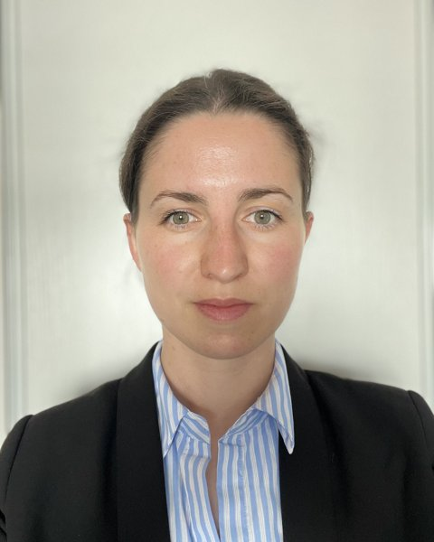

Manon Gondard
Relation client · Support · Communication digitale
Organisée, fiable et à l'aise avec les outils numériques, j'accompagne clients et utilisateurs au quotidien : réponses aux demandes, suivi des dossiers, gestion d'outils en ligne et création de contenus. Je recherche un poste stable dans lequel m'investir sur la durée.

Ce que je fais bien
Un profil polyvalent, entre relation client, gestion administrative et digital.
Relation client & support
- Réponses écrites aux clients (e-mail, messagerie, back-office)
- Aide à l'utilisation d'un outil ou d'une application
- Suivi des demandes jusqu'à leur résolution
- Recueil des retours clients
Organisation & gestion
- Devis, propositions commerciales et suivi de production
- Traitement de dossiers en volume (vérification, relances)
- Tableaux de suivi et reporting (Excel, Google Sheets)
- Plannings, rendez-vous et coordination
Digital & communication
- Gestion des réseaux sociaux et de la communauté
- Mise à jour de sites, d'applications et de back-offices
- Mise en page de documents (PDF, présentations)
- Montage vidéo simple et visuels
Parcours
Cinq ans en agence, puis des missions en autonomie, à distance, pour des clients variés.
Chargée de communication digitale & support applicatif
- Gestion quotidienne d'une application (≈ 135 clientes) : inscriptions, paramétrage, bugs, nouvelles fonctionnalités
- Support des utilisatrices : accès, connexion, questions sur l'utilisation
- Conception d'un programme PDF d'environ 100 pages (≈ 100 acheteuses)
- Réseaux sociaux de 2 comptes : ≈ 270 vidéos, plus de 1,4 million de vues
Community manager
- Planning éditorial, vidéos, visuels et stories (Instagram, Facebook)
- Stratégie LinkedIn pour attirer les entreprises (séminaires)
- Gestion de la fiche Google : informations, photos, réponses aux avis clients
Missions ponctuelles en renfort
- Gestion d'opérations de remboursement pour des marques (Cecil V33, Zodiac)
- Traitement de plusieurs centaines de participations, contact avec les participants, bilan
Assistante chef de projet marketing digital
- Suivi client : compréhension des besoins, réponses, résolution de problèmes
- Devis, propositions commerciales et suivi de fabrication
- Mise à jour de sites et d'outils digitaux, animation des réseaux sociaux
- Grands comptes : Zodiac Fluidra, Panzani, Cecil V33, Sodiaal
Licence pro E-commerce & Marketing numérique
IUT Jean Moulin Lyon 3 · 2019
DEUST Webmaster & métiers de l'Internet
Université de Limoges · 2018
BTS Assistant de gestion PME-PMI
Lycée Albert Thomas, Roanne · 2016
Quelques réalisations
Des projets concrets, menés en autonomie, du suivi client à la mise en ligne.
Aérienne Club — application de coaching
Création de l'application avec la cliente, puis gestion au quotidien : inscriptions des membres, support, corrections de bugs, notifications et ajout de fonctionnalités à partir des retours des utilisatrices.
Opérations de remboursement pour des marques
Mise en place du site de l'opération, vérification des participations, réponses aux participants en cas de problème et bilan final pour le client.
Stronger on the Pole — programme PDF
Conception d'un programme d'environ 100 pages (entraînements, nutrition) avec vidéos intégrées, puis animation du groupe des acheteuses.
Domaine de Chanille & comptes coaching
Plannings, tournages, montages et publications pour un lieu de réception et deux comptes de coaching : plus de 1,4 million de vues cumulées.
Outils que j'utilise
En parallèle, en indépendante
Je garde ma micro-entreprise pour quelques missions ponctuelles. Si vous avez un besoin précis, parlons-en.
- ✔︎ Gestion de réseaux sociaux
- ✔︎ Création de visuels et de documents
- ✔︎ Mise à jour de site internet
- ✔︎ Renfort administratif ou support client
Me contacter
Un poste à pourvoir ou une question ? Écrivez-moi, je réponds rapidement.